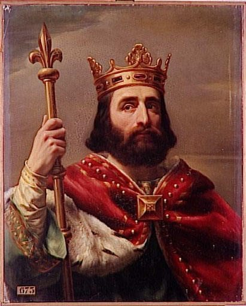

L'histoire de la cité phocéenne
L’histoire de la ville est résolument tournée vers la mer car c’est de la Grande Bleue que sont arrivés les premiers habitants. 500 ans plus tard, le port de Marseille était né. Aménagé en bassin creux, il pouvait désormais accueillir les navires pour du commerce. Massalia, comme elle était appelée à l’époque, allait connaître son premier âge d’or basé sur l’échange de marchandises de l’ouest vers le sud.
Ecrit par l'historien Delogu Rodrigue
L'union de Gyptis et de Prôtis, le mythe de la fondation de Marseille.
Au début du VIe siècle av. J.-C., un premier habitat s’organise dans l’actuel quartier du Panier, au-dessus du port situé dans la calanque. La ville est placée sous la protection d’Artémis, d’Apollon et d’Athéna qui ont leurs temples sur les collines. Les Phocéens utilisent la position favorable du site de Marseille, à l’abri des vents dominants, la protection des îles du Frioul et la proximité avec le Rhône pour commercer avec les Gaulois.
Le mythe de fondation de Massalia décrit la rencontre entre un marin grec, Prôtis, et une princesse gauloise, Gyptis. Son père, Nannos, le roi des Ségobriges, donne en cadeau de mariage le territoire de Massalia, qui est la plus ancienne ville de France. Il est possible que les citoyens de Phocée émigrent une seconde fois en 546 av. J.-C., chassés par les Perses. Ils apportent avec eux leur religion, leur langue, des techniques de construction, la culture de la vigne et de l’olivier et des produitscommerciaux de Méditerranée comme le vin et des vases en céramique. De la rencontre entre Grecs et Gaulois va naître une riche culture, en dépit de nombreux conflits territoriaux.
De Massalia à Massilia : la ville romaine
L’habitat se développe dans l’ancienne zone portuaire. On y trouve un forum dallé, un théâtre de tradition grecque et, plus à l’est, un vaste édifice thermal. En bordure du plan d’eau du Lacydon, comme le nomment des auteurs latins tardifs, apparaissent de vastes entrepôts, des horrea.
En dépit d’une romanisation progressive qui se manifeste par la progression du latin, l’architecture et le décor des maisons et les usages funéraires, l’héritage grec se perpétue dans la trame urbaine, ses orientations et ses « quartiers ». Il se manifeste également par l’usage fréquent de la langue grecque sur les inscriptions. Sur l’ancien territoire agricole, de grandes habitations littorales ou rurales (villae) montrent une campagne romanisée où l’on cultive la vigne, l’olivier et les céréales.
Marseille, comme Arles, participe à la paix romaine en Méditerranée, l’essor des échanges en est une conséquence particulièrement bien documentée avec les épaves et leurs cargaisons.

De la cité antique à la cité médiévale
Dès 400, de nouveaux édifices de culte caractérisent ces premiers temps chrétiens. En témoignent en ville un groupe épiscopal doté du plus grand baptistère des Gaules et, hors les murs, le sanctuaire de Saint-Victor et la basilique funéraire de la rue Malaval avec sa tombe vénérée. Des nécropoles aux rites et pratiques nouvelles perpétuent l’auréole funéraire antique autour de la ville et le long des voies avec des regroupements autour des nouveaux édifices funéraires. Près de la cathédrale, on constate par ailleurs les premiers ensevelissements en ville. Le développement de l’habitat et de l’activité du port montre des échanges intenses que Marseille entretient avec toute la Méditerranée, après la fin de l’Empire et l’avènement des Francs. Cependant la reprise en main de la ville par Charles Martel en 738 inaugure deux siècles d’un haut Moyen Âge au cours desquels Marseille décline. À terme, l’essentiel de l’habitat paraît cantonné dans deux enceintes réduites d’une ville dont les monuments antiques sont en ruine.
